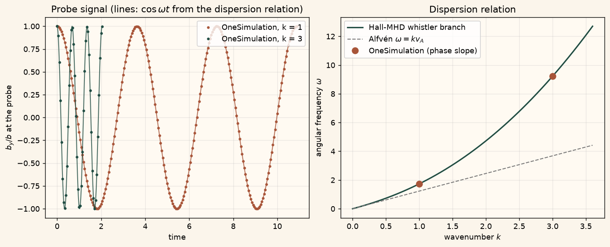

Docs › Examples › Whistler waves in Hall MHD
Hall MHD · 3D
Whistler waves in Hall MHD
Circularly polarised waves along a background field in Hall MHD, graded against the whistler dispersion relation.

What it computes
OneSimulation advances the Hall-MHD equations in a periodic box and measures the wave frequency for two wavenumbers from the field phase.
What it checks
omega(k) = k v_A [sqrt(1 + (k d_i/2)^2) + k d_i/2] is reproduced to about 1e-6; total energy and div B are conserved exactly.
The notebook
The complete notebook, cell by cell. Run it to produce the figures and the comparison printout.
A uniform, cold-ish plasma of density \(\rho_0\) is threaded by a uniform magnetic field \(B_0\,\hat{\mathbf{x}}\). A small circularly polarised perturbation \(\mathbf{b}=b\,(0,\cos kx,\sin kx)\) with a matching transverse velocity is launched along the field. OneSimulation integrates the eight conserved Hall-MHD fields (density, three momenta, total energy, three magnetic components) with Fourier periodic spatial operators and a classical RK4 time step. The induction equation contains the Hall electric field
which makes the parallel-propagating Alfvén wave dispersive.
Reference. Linearising Hall MHD about the uniform state gives, for the right-hand (whistler) branch along \(\mathbf{B}_0\),
with \(d_i\) the ion inertial length implied by the Hall coefficient \(\eta_H\) (the left-hand branch carries the opposite sign of \(k d_i/2\)). Equivalently \(\omega^2-\omega_H\,\omega-\omega_A^2=0\) with \(\omega_H=\eta_H B_0 k^2/\rho_0\) and \(\omega_A=k v_A\). For \(k d_i\to 0\) this reduces to the Alfvén wave \(\omega=k v_A\); for large \(k d_i\) it approaches the whistler scaling \(\omega\simeq k^2 d_i v_A\). The transverse field at a fixed point rotates at exactly \(\omega\), and the circularly polarised wave is an exact nonlinear solution, so density, pressure and total energy stay uniform and constant.
from importlib.metadata import version
import numpy as np
import matplotlib.pyplot as plt
from onesim.physics.magnetohydrodynamics.resistive.numerics.backends.equations.resistive_mhd_3d import (
ResistiveMHD3DSolver,
)
print("OneSimulation:", version("onesimulation"))Parameters
Dimensionless units with \(\mu_0=1\). The periodic box has side \(2\pi\) in every direction, so the admissible wavenumbers are integers. The wave only varies along \(x\); the grid is deliberately coarse because the spatial operators are spectral and the time step is far below the RK4 stability limit of the fastest resolved whistler.
rho_0 = 1.3 # background density
B_0 = 1.4 # background field along x
eta_H = 0.8 # Hall coefficient eta_H in E_Hall = eta_H (J x B) / rho
amplitude = 0.04 # transverse field amplitude b / B_0 ~ 3 %
wavenumbers = (1, 3) # integer wavenumbers in the 2 pi periodic box
cells = 8 # cells per direction (spectral operators, periodic)
time_step = 0.005 # RK4 time step
sample_every = 10 # time steps between two stored samples
periods = 3.0 # simulated duration in wave periods
v_A = B_0 / np.sqrt(rho_0)
d_i = eta_H / np.sqrt(rho_0)
def whistler_frequency(k):
half = 0.5 * k * d_i
return k * v_A * (np.sqrt(1.0 + half**2) + half)
print(f"v_A = {v_A:.4f}, d_i = {d_i:.4f}")
for k in wavenumbers:
print(f"k = {k}: k d_i = {k*d_i:.3f}, Alfven k v_A = {k*v_A:.4f}, whistler omega = {whistler_frequency(k):.4f}")Hall-MHD runs
The solver advances a conservative state from \(t=0\) to final_time; the time series is obtained by chaining short segments, each restarted from the previous final state, which reproduces a single long RK4 run step for step. All six box faces are periodic (the solver is built on periodic Fourier operators, there is no other boundary). The initial transverse velocity \(\mathbf{v}_\perp = (k B_0/\omega)\,\mathbf{b}/\rho_0\) selects the whistler branch; the energy is the ideal-gas total energy with \(p_0=1\), \(\gamma=1.4\).
segment = ResistiveMHD3DSolver(
mesh_size=cells, gamma=1.4, resistivity=0.0, hall_coefficient=eta_H,
final_time=sample_every * time_step, time_step=time_step, time_method="classical_rk4",
)
x, _, _ = np.meshgrid(*segment.axes, indexing="ij")
print("Grid:", "x".join(str(n) for n in segment.shape), "cells, box side 2 pi, periodic in x, y, z")
runs = {}
for k in wavenumbers:
omega_ref = whistler_frequency(k)
wave = amplitude * np.exp(1j * k * x)
density = np.full_like(x, rho_0)
magnetic = (np.full_like(x, B_0), wave.real, wave.imag)
momentum = (np.zeros_like(x), *(k * B_0 / omega_ref * b for b in magnetic[1:]))
energy = 1.0 / (segment.gamma - 1.0) + 0.5 * (
sum(m**2 for m in momentum) / density + sum(b**2 for b in magnetic)
)
state = (density, momentum, energy, magnetic)
n_samples = int(round(periods * 2.0 * np.pi / omega_ref / segment.final_time))
times, probe, energy_drift, div_b = [0.0], [complex(magnetic[1][0, 0, 0], magnetic[2][0, 0, 0])], [0.0], [0.0]
t = 0.0
for _ in range(n_samples):
res = segment.run(state)
t += res.time
state = (res.density, res.momentum, res.total_energy, res.magnetic_field)
times.append(t)
probe.append(complex(res.magnetic_field[1][0, 0, 0], res.magnetic_field[2][0, 0, 0]))
energy_drift.append(float(np.max(np.abs(res.total_energy - energy)) / np.max(energy)))
div_b.append(float(np.max(np.abs(res.divergence))))
runs[k] = dict(times=np.asarray(times), probe=np.asarray(probe), omega_ref=omega_ref,
energy_drift=np.asarray(energy_drift), div_b=np.asarray(div_b),
final=res, initial_energy=energy)
print(f"k = {k}: {n_samples * sample_every} RK4 steps to t = {t:.3f} ({periods:.0f} periods)")Measured frequency versus the dispersion relation
At the probe point the complex transverse field \(b_y+\mathrm{i}\,b_z\) rotates with constant modulus; the slope of its unwrapped phase against time is the angular frequency. The period is also read from the zero crossings of \(b_y\).
print(f"{'k':>3} {'omega measured':>15} {'omega reference':>16} {'rel. error':>11} {'Alfven k v_A':>13}")
for k, run in runs.items():
phase = np.unwrap(np.angle(run["probe"]))
omega_measured = abs(np.polyfit(run["times"], phase, 1)[0])
by = run["probe"].real
crossings = np.flatnonzero(np.sign(by[:-1]) != np.sign(by[1:]))
t_cross = [t0 - by0 * (t1 - t0) / (by1 - by0) for t0, t1, by0, by1 in
zip(run["times"][crossings], run["times"][crossings + 1], by[crossings], by[crossings + 1])]
period_measured = 2.0 * np.mean(np.diff(t_cross))
run["omega_measured"] = omega_measured
run["rel_error"] = abs(omega_measured - run["omega_ref"]) / run["omega_ref"]
run["period_error"] = abs(period_measured - 2.0 * np.pi / run["omega_ref"]) / (2.0 * np.pi / run["omega_ref"])
modulus_drift = np.max(np.abs(np.abs(run["probe"]) - amplitude)) / amplitude
print(f"{k:>3} {omega_measured:>15.5f} {run['omega_ref']:>16.5f} {100*run['rel_error']:>10.4f}% {k*v_A:>13.4f}")
print(f" period from zero crossings {period_measured:.4f} (reference {2*np.pi/run['omega_ref']:.4f}, "
f"{100*run['period_error']:.3f} %), modulus drift {modulus_drift:.1e}")
print(f" max relative total-energy change {run['energy_drift'].max():.1e}, max |div B| {run['div_b'].max():.1e}")
assert run["rel_error"] < 1e-3, f"k={k}: phase-slope frequency off by more than 0.1 % from the whistler dispersion."
assert run["period_error"] < 1e-2, f"k={k}: zero-crossing period off by more than 1 %."
assert modulus_drift < 1e-6, "The circularly polarised wave must keep its amplitude."
assert run["energy_drift"].max() < 1e-10, "Total energy is not conserved."
assert run["div_b"].max() < 1e-10, "The magnetic field is not divergence-free."
# The Hall term must matter: both waves run clearly faster than the Alfvén speed,
# and the k = 3 wave more so (dispersive).
ratio_1 = runs[1]["omega_measured"] / (1 * v_A)
ratio_3 = runs[3]["omega_measured"] / (3 * v_A)
print(f"omega / (k v_A): k=1 -> {ratio_1:.3f}, k=3 -> {ratio_3:.3f} (1.000 would be a non-dispersive Alfven wave)")
assert ratio_1 > 1.2 and ratio_3 > ratio_1 * 1.5, "The whistler dispersion must be visibly non-Alfvénic."Figure
Left: the probe time series of \(b_y\) against the reference \(b\cos(kx_{\rm probe}+\omega t)\). Right: the two measured frequencies on the analytical dispersion curve, with the Alfvén line for comparison.
cream = "#fbf5eb"
fig, (ax_t, ax_w) = plt.subplots(1, 2, figsize=(11, 4.4), constrained_layout=True)
fig.patch.set_facecolor(cream)
colors = {1: "#A85539", 3: "#214D43"}
for k, run in runs.items():
ax_t.plot(run["times"], run["probe"].real / amplitude, "o", ms=2.5, color=colors[k], label=f"OneSimulation, k = {k}")
t_fine = np.linspace(0.0, run["times"][-1], 600)
ax_t.plot(t_fine, np.cos(run["omega_ref"] * t_fine), "-", lw=1.2, color=colors[k], alpha=0.8)
ax_t.set_facecolor("#fffaf2"); ax_t.grid(alpha=0.25)
ax_t.set(xlabel="time", ylabel="$b_y / b$ at the probe", title="Probe signal (lines: $\\cos\\omega t$ from the dispersion relation)")
ax_t.legend(loc="upper right")
k_fine = np.linspace(0.0, 3.6, 300)
ax_w.plot(k_fine, whistler_frequency(k_fine), "-", color="#214D43", lw=1.8, label="Hall-MHD whistler branch")
ax_w.plot(k_fine, k_fine * v_A, "--", color="#7a7a7a", lw=1.2, label="Alfvén $\\omega = k v_A$")
ax_w.plot([k for k in runs], [runs[k]["omega_measured"] for k in runs], "o", ms=8, color="#A85539",
label="OneSimulation (phase slope)")
ax_w.set_facecolor("#fffaf2"); ax_w.grid(alpha=0.25)
ax_w.set(xlabel="wavenumber $k$", ylabel="angular frequency $\\omega$", title="Dispersion relation")
ax_w.legend(loc="upper left")
plt.show()Going further
Flip the sign of the transverse velocity to launch the left-hand (ion-cyclotron) branch and check \(\omega=k v_A[\sqrt{1+(k d_i/2)^2}-k d_i/2]\), which saturates instead of growing with \(k\). Set eta_H = 0 to recover the non-dispersive Alfvén wave, or switch on a finite resistivity and compare the measured damping rate with \(\eta k^2/2\).